<meta charset="utf-8">
<meta name="viewport" content="width=device-width, initial-scale=1">
<title>The Armageddon Man</title>
<link rel="preconnect" href="https://fonts.googleapis.com">
<link rel="stylesheet" href="https://fonts.googleapis.com/css2?family=Lato:wght@400;700;900&family=IBM+Plex+Mono:wght@400;500&display=swap">
<style>
:root{
  --bg:#23262d; --paper:#e9e7e1; --surface:#ffffff; --surface-2:#f1efea; --line:#d5d3cc; --line-soft:#e0ded8;
  --ink:#2f3136; --ink-soft:#55585f; --ink-mute:#80838a;
  --link:#1f5fa8; --link-hover:#154480; --accent:#1f5fa8;
  --amber:#c25a00; --cyan:#1f5fa8; --coral:#d04a3a; --green:#2a8a4a; --violet:#4a5bd6; --hl:#fff0c2;
  --chip:#2f3136; --chip-ink:#ffffff;
  --c64blue:#40318d; --c64grey:#686868;
  --fd:'Lato',system-ui,sans-serif; --fb:'Lato',system-ui,sans-serif; --fm:'IBM Plex Mono',ui-monospace,Menlo,monospace;
  --col:1080px; --gx:68px; --fs:17px; --lh:1.6; --hw:900; --h1:46px; --h2:26px; --sy:48px; --pp:26px; --r:10px;
  --plate-shadow:0 1px 2px rgba(0,0,0,.05),0 4px 14px rgba(0,0,0,.05);
}
*{box-sizing:border-box}
html{background:var(--bg);min-height:100%}
body{background:var(--paper);color:var(--ink);font-family:var(--fb);font-size:var(--fs);line-height:var(--lh);max-width:var(--col);margin:0 auto;min-height:100vh;padding:0 0 4rem}
h1,h2,h3{font-weight:var(--hw);letter-spacing:-.01em;text-wrap:balance;color:var(--ink);margin:0}
.wrap{padding:0 var(--gx)}
.hero{padding:48px var(--gx) 8px;text-align:left}
.eyebrow{font-family:var(--fm);font-size:12px;letter-spacing:.08em;text-transform:uppercase;color:var(--ink-mute);margin:0 0 10px}
.hero h1{font-size:var(--h1);line-height:1.15;letter-spacing:-.02em;margin:0 0 14px}
.hero .sub{margin:0 0 .6em;color:var(--ink-soft)}
section{padding:var(--sy) 0 24px}
section:last-of-type{border-bottom:none}
.fig{font-family:var(--fm);font-size:12px;letter-spacing:.08em;text-transform:uppercase;color:var(--ink-mute);margin:0 0 10px}
h2.t{font-size:var(--h2);margin-bottom:12px}
.lede{color:var(--ink-soft);margin:0 0 30px}
.plate{background:var(--surface);border:1px solid var(--line);border-radius:var(--r);padding:var(--pp);box-shadow:var(--plate-shadow)}
.cap{font-size:14px;color:var(--ink-mute);margin-top:14px;line-height:1.55}
.cap b{color:var(--ink);font-weight:700}
code{font-family:var(--fm);font-size:.82em;background:var(--chip);color:var(--chip-ink);border-radius:4px;padding:2px 6px;overflow-wrap:break-word;-webkit-box-decoration-break:clone;box-decoration-break:clone}

.am-cv{display:block;width:100%;height:auto;image-rendering:pixelated;background:#000;border-radius:4px}
.am-stack{position:relative}
.am-stack canvas+canvas{position:absolute;left:0;top:0;width:100%;height:100%;background:transparent}
.am-bar{display:flex;flex-wrap:wrap;gap:8px;margin:0 0 14px;align-items:center}
.am-btn{font:inherit;font-family:var(--fm);font-size:12.5px;background:var(--surface);border:1px solid var(--line);border-radius:6px;padding:5px 11px;color:var(--ink);cursor:pointer;line-height:1.3}
.am-btn:hover{border-color:var(--ink-mute)}
.am-btn[aria-pressed="true"]{background:var(--accent);border-color:var(--accent);color:#fff}
.am-pics{display:grid;grid-template-columns:repeat(3,minmax(0,1fr));gap:14px}
.am-pics.am-two{grid-template-columns:repeat(2,minmax(0,1fr))}
.am-pics figure{margin:0}
.am-pics img{display:block;width:100%;height:auto;image-rendering:pixelated;border-radius:4px}
.am-pics figcaption{font-size:13px;color:var(--ink-mute);margin-top:6px;line-height:1.45}
.am-tbl{border-collapse:collapse;font-size:14px;width:100%;margin:4px 0 0}
.am-tbl th,.am-tbl td{text-align:left;vertical-align:top;padding:5px 8px;border-bottom:1px solid var(--line-soft)}
.am-tbl th{font-weight:700;color:var(--ink-soft)}
.am-tbl td.am-n,.am-tbl th.am-n{font-family:var(--fm);font-size:13px;white-space:nowrap;text-align:right}
.am-tbl td.am-c{text-align:center}
.am-tbl tr.am-on td{background:var(--hl)}
.am-wrapx{overflow-x:auto}
.am-field{display:flex;flex-wrap:wrap;gap:8px 14px;align-items:center;font-size:14px;margin:0 0 12px}
.am-field label{color:var(--ink-soft)}
.am-field select{font:inherit;font-size:14px;padding:3px 6px;border:1px solid var(--line);border-radius:6px;background:var(--surface);max-width:100%}
.am-range{width:100%;max-width:420px;accent-color:var(--accent)}
.am-mono{font-family:var(--fm);font-size:13px}
.am-out{font-size:15px;color:var(--ink);margin:12px 0 0;line-height:1.55}
.am-split{display:grid;grid-template-columns:minmax(0,1fr) minmax(0,1fr);gap:20px;align-items:start}
.am-ladder{display:grid;grid-template-columns:2.2em minmax(0,1fr) 2.6em;gap:1px 8px;font-size:12.5px;line-height:1.25;align-items:center}
.am-ladder span{white-space:nowrap;overflow:hidden;text-overflow:ellipsis}
.am-ladder .am-k{font-family:var(--fm);color:var(--ink-mute);text-align:right}
.am-ladder .am-v{font-family:var(--fm);text-align:right}
.am-ladder .am-row{display:contents}
.am-ladder .am-row.am-off span{color:var(--ink-mute);opacity:.55}
.am-ladder .am-row.am-hit span{background:var(--amber);color:#fff}
.am-ladder .am-row.am-mark span{color:var(--accent);font-weight:700}
.am-memo{background:#75cec8;color:#2e2c9b;border:3px solid #2e2c9b;border-radius:2px;padding:10px 14px 14px;font-family:var(--fm);font-size:14px;line-height:1.5;min-height:9.5em;white-space:pre-wrap}
.am-memo b{display:block;font-family:Georgia,serif;font-weight:400;font-size:20px;color:#813338;margin:0 0 8px;letter-spacing:.02em}
.am-memo.am-quiet{background:var(--surface-2);color:var(--ink-mute);border-color:var(--line)}
.am-radio{background:#edf171;color:#56ac4d;border:3px solid #813338;padding:8px 12px;font-family:var(--fm);font-size:14px;line-height:1.45;height:11.2em;overflow:hidden;white-space:pre-wrap;word-break:break-all}
.am-filters{display:flex;flex-wrap:wrap;gap:6px;margin:12px 0 0}
.am-filters button{font-family:var(--fm);font-size:13px;min-width:46px;padding:6px 0;border:1px solid var(--line);border-radius:6px;background:var(--surface-2);color:var(--ink);cursor:pointer}
.am-filters button[aria-pressed="true"]{background:#813338;border-color:#813338;color:#fff}
.am-meter{display:flex;gap:3px;margin:10px 0 0}
.am-meter i{display:block;flex:1;height:8px;border-radius:2px;background:var(--line-soft)}
.am-meter i.am-ok{background:var(--green)}
.am-list{margin:8px 0 0;padding:0;list-style:none;font-size:14px;columns:2;column-gap:20px}
.am-list li{padding:2px 0;break-inside:avoid}
.am-sw{display:inline-block;width:12px;height:12px;border-radius:2px;vertical-align:-1px;margin-right:6px;border:1px solid rgba(0,0,0,.25)}
.am-ticks{display:grid;grid-template-columns:9em repeat(8,minmax(0,1fr));gap:3px;font-size:13px;align-items:center}
.am-ticks span{text-align:center;padding:4px 0;border-radius:4px}
.am-ticks .am-h{font-family:var(--fm);color:var(--ink-mute)}
.am-ticks .am-l{text-align:left;color:var(--ink-soft)}
.am-ticks .am-y{background:var(--accent);color:#fff}
.am-ticks .am-n0{background:var(--surface-2)}
@media (max-width:720px){:root{--gx:16px;--h1:34px;--pp:16px}.am-pics,.am-pics.am-two,.am-split{grid-template-columns:1fr}.am-list{columns:1}.am-ticks{grid-template-columns:6.5em repeat(8,minmax(0,1fr));font-size:12px}}
</style>
<!-- tabs -->
<header class="hero">
  <p class="eyebrow">1987 · Martech</p>
  <h1>The Armageddon Man</h1>
  <p class="sub">For a year of 52 weeks you keep sixteen nuclear powers from destroying the world. Every country chooses its next move by holding its hostility to a neighbour against a ladder of 32 levels of its own, and a slip in that comparison makes two countries at perfect peace launch a Total Missile Attack on each other.</p>
</header>
<main class="wrap">

<section id="game">
  <p class="fig">01 · The game</p>
  <h2 class="t">Supreme Commander for a year</h2>
  <p class="lede">A strategy game played entirely through one screen of icons, in which the player answers memos and letters while the world drifts towards war.</p>
  <div class="plate">
    <div class="am-pics">
      <figure>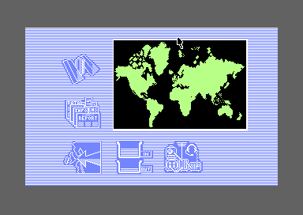<figcaption>The main screen: the satellites and the reports at the left, the U.N.N. Force, the trays and the radio below the map.</figcaption></figure>
      <figure>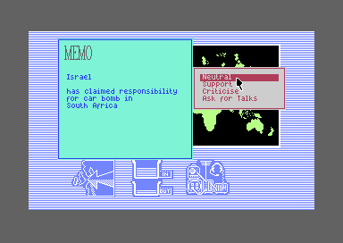<figcaption>A memo: one country has done something to another, and the player has to answer.</figcaption></figure>
      <figure>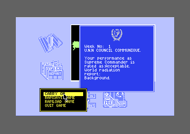<figcaption>The communique at the end of every week rates the player and the world's radiation.</figcaption></figure>
    </div>
  </div>
  <p>The player is Supreme Commander of the United Nations of Nations, the U.N.N., in a world split into sixteen member countries with nuclear missiles. Each country has its own resources, missiles and temper. Every few seconds one of them does something to another: a trade pact, a car bomb, a missile attack. A memo reports it, and the player answers Neutral, Support, Criticise or Ask for Talks. Each answer changes how much each country trusts the Commander and how much the two countries hate each other.</p>
  <p>Between memos the player reads the IN tray, sends standard letters from the OUT tray, moves the U.N.N. Force, puts satellites in orbit over the map and listens to the radio. The year lasts 52 weeks. It can end sooner: when a country gets the Commander recalled, or when the world's radiation reaches the top of its scale.</p>
</section>

<section id="screen">
  <p class="fig">02 · The main screen</p>
  <h2 class="t">A Spectrum screen inside a Commodore 64 one</h2>
  <p class="lede">The game came from the ZX Spectrum, and the C64 version draws everything inside the Spectrum's 256 by 192 pixels.</p>
  <div class="plate">
    <div class="am-bar" id="am-screen-bar">
      <button type="button" class="am-btn" data-ov="spec" aria-pressed="true">The Spectrum's screen</button>
      <button type="button" class="am-btn" data-ov="cells" aria-pressed="false">Colour cells</button>
      <button type="button" class="am-btn" data-ov="boxes" aria-pressed="false">Country boxes</button>
    </div>
    <div class="am-stack"><canvas id="am-frame" class="am-cv" width="384" height="272"></canvas><canvas id="am-frame-ov" width="768" height="544" aria-hidden="true"></canvas></div>
    <p class="cap" id="am-frame-cap">Drawn by the page from the listing: the bitmap at <code>$E000</code> as it loads, the colour cells that <code>hardware_init</code> (<code>$62CD</code>) and <code>cold_start</code> (<code>$7C52</code>) fill in, and the arrow's two sprites that <code>cursor_shape1</code> (<code>$5F14</code>) builds. The video chip's registers are those of a frame recorded in VICE, where the cursor stood. Compared with VICE's picture of that frame, none of its 104,448 pixels differ.</p>
  </div>
  <p>The C64's memory is a row of 65,536 bytes, each a number from 0 to 255. Numbers that start with a $ are hexadecimal, and those in dark boxes are addresses in that memory, or the names the listing gives them: each opens the Source code tab at that point.</p>
  <p>The screen is a high-resolution bitmap, a picture of 320 by 200 dots stored a bit a dot, with a pair of colours for each 8 by 8 cell. The game uses only the 32 by 24 cells that start at column 4 and row 1, the size of the Spectrum's screen, and leaves a striped frame around them. Its table of row addresses, <code>screen_rows</code> (<code>$4FD3</code>), starts at that corner, and a leftover routine for placing sprites, <code>unused_sprite_at</code> (<code>$51C9</code>), still takes Spectrum coordinates and adds the C64's border.</p>
  <p>Two colour fills make the picture. At start-up every cell gets <code>$1E</code>, white on light blue, which colours the stripes and icons. Then <code>fill_cells</code> (<code>$717E</code>) paints the map's 21 by 14 cells <code>$D0</code>, light green land on black sea, from the five bytes that follow its call at <code>$7C5C</code>. The arrow is two sprites, the small pictures the video chip moves over the screen by itself: a white outline over a black solid shape, so it shows on any colour.</p>
  <p>Each country owns a rectangle on the map, the first four bytes of its record at <code>countries</code> (<code>$5DA4</code>). The rectangles are what the satellites look for, and they do not follow the coastlines: the Eastern Block's is 71 pixels wide and Israel's 3.</p>
</section>

<section id="music">
  <p class="fig">03 · The music</p>
  <h2 class="t">Music: one tune for the whole year</h2>
  <p class="lede">The tune starts on the options panel and plays without a break for as long as the game runs. Three more tunes and seventeen sound effects sit beside it, and nothing ever starts them.</p>
  <div class="plate">
    <div id="am-music"></div>
    <p class="cap">The page runs the game's own sound code, <code>$4000</code>-<code>$4DEB</code> from the listing, on the site's model of the C64's processor, the 6502, and through its model of the sound chip, the SID: <code>mus_start_tune</code> (<code>$4000</code>) once with the tune's number, as <code>options_panel</code> (<code>$7D0B</code>) does for tune 0, then <code>sound_irq</code> (<code>$413A</code>) once a frame, as the game's raster interrupt does: a routine the video chip sets off when it reaches a chosen line of the screen. Every write it makes to the chip, frame by frame for 3,000 frames of each button, is checked against the same calls made on the listing in the kit's simulator. Tunes 1, 2 and 3 are never played in the game.</p>
  </div>
  <p>The driver plays three voices from patterns of notes and commands: arpeggio tables, vibrato, slides, a glide from note to note and drums made of a burst of noise on every other frame. Each tune has a speed, the number of calls between steps of its patterns (<code>tune_table</code>, <code>$46E3</code>). The raster interrupt calls the driver once a frame, but <code>sound_irq</code> skips one call in ten, so the music gets 45 calls a second rather than 50.</p>
  <p>Tune 0, at speed 6, is the music the manual credits to Millers. Tunes 1 and 2, at speed 8, and tune 3, at speed 5, are jingles a few seconds long. Nothing in the game starts them, and the sound effects are just as silent (<a href="#sound">below</a>).</p>
</section>

<section id="sound">
  <p class="fig">04 · The sound effects</p>
  <h2 class="t">Sound: seventeen effects the game never plays</h2>
  <p class="lede">A player for two-voice sound effects and an alarm sits in the sound code, ready to call, and no instruction in the game calls it.</p>
  <div class="plate">
    <div id="am-sfx"></div>
    <p class="cap">The game's own sound code from the listing on the site's 6502: <code>sfx_start</code> (<code>$4A8E</code>) with the effect's number, or <code>alarm_start</code> (<code>$4A48</code>) with a period, then <code>sound_irq</code> once a frame. The game never calls either, so these are the calls their code expects, made by the page; the alarm's period is the page's choice. Every write to the chip is checked against the same calls on the listing in the kit's simulator.</p>
  </div>
  <p>Each effect is a record of twenty bytes, from <code>sfx_0</code> (<code>$4B39</code>) on, found through <code>sfx_table</code> (<code>$4B17</code>): a frequency, an envelope (how the volume rises and dies away), a waveform and a pulse width for voices 1 and 3, a step that sweeps each frequency up or down, how many steps the effect lasts, and how often and how many times it goes back to its starting pitches. While an effect plays, the music gives up voices 1 and 3 and keeps voice 2. The alarm takes voice 2 instead: a steady tone with the period 7, noise with the period 0, and a tone broken by bursts of noise with any period between.</p>
  <p>No instruction calls <code>sfx_start</code> or <code>alarm_start</code>, and no table holds their addresses. The effects, the alarm and their records fill <code>$4A48</code> to <code>$4DB0</code>, 873 bytes, and what the game would have played them for is not known.</p>
</section>

<section id="clock">
  <p class="fig">05 · The clock</p>
  <h2 class="t">A week lasts 31 seconds</h2>
  <p class="lede">The world moves on a clock that counts frames on the main screen, and it stops while a window waits for the player.</p>
  <div class="plate">
    <div class="am-ticks" id="am-ticks" role="table" aria-label="What runs on each tick of a week"></div>
    <p class="cap"><code>game_clock</code> (<code>$7DD1</code>) counts 192 passes of the main loop to a tick (<code>clock_count</code>, <code>$5B54</code>) and numbers the ticks (<code>clock_ticks</code>, <code>$5B55</code>). In VICE the main loop made 100 passes in 100 frames of the main screen, and 136 passes in 400 frames with a memo open for most of them.</p>
  </div>
  <p>The main loop makes one pass a frame, so a tick is 192 frames, 3.8 seconds on a European (PAL) machine. Every tick one country may act on another (<a href="#events">next</a>). Every fourth tick the radio may pick up a message, and on the tick after it a Big Bird satellite may report. Every eighth tick ends the week, and a week of 1,536 frames lasts about 31 seconds. A year of 52 weeks is 27 minutes of the main screen, and much longer in practice, because the clock is the main loop's: a window that waits for an answer holds the whole world still.</p>
</section>

<section id="events">
  <p class="fig">06 · How a country acts</p>
  <h2 class="t">Each country climbs a ladder of 32 events</h2>
  <p class="lede">On every tick the game picks a country at random and looks for a neighbour whose hostility lands on one of the country's 32 event levels.</p>
  <div class="plate">
    <div class="am-field">
      <label for="am-ev-a">Country A</label><select id="am-ev-a"></select>
      <label for="am-ev-b">acts on B</label><select id="am-ev-b"></select>
    </div>
    <div class="am-field">
      <label for="am-ev-h">A's hostility to B</label>
      <input type="range" id="am-ev-h" class="am-range" min="0" max="255" value="80">
      <span class="am-mono" id="am-ev-hv">80</span>
    </div>
    <div class="am-split">
      <div class="am-ladder" id="am-ladder" aria-label="Country A's 32 event levels"></div>
      <div><div class="am-memo" id="am-memo" aria-live="polite"></div><p class="am-out" id="am-ev-out"></p></div>
    </div>
    <p class="cap">A's levels are its 32 bytes of <code>event_levels</code> (<code>$958C</code>), and the memo is the event's text from <code>event_texts</code> (<code>$55B8</code>) with the two names filled in, as <code>expand_text</code> (<code>$AB96</code>) does. The choice is <code>country_events</code> (<code>$AE77</code>) written again in JavaScript and checked against the game's own code in the kit's simulator: every hostility for every country, and 3,000 random tables of relationships, destroyed countries and random numbers, in which the page and the game picked the same pair and the same event every time.</p>
  </div>
  <p>The game keeps a table of 256 hostilities at <code>relations</code> (<code>$5C5C</code>): how much each country dislikes each of the others, from 0, the friendliest, to 255. Each country also has a ladder of 32 levels, one for each event it can start, from a Total Missile Attack at 255 down to a Mutual Defence Pact, between 4 and 40. A level of 0 means the country never starts that event: Canada never assassinates a diplomat.</p>
  <p>On each tick <code>country_events</code> picks a country A at random, skipping one that has been destroyed. It then goes through the other countries from a random one on, and for each it compares A's hostility to that country with A's ladder from the top. The first level within one of the hostility wins, and its event happens. A country with no match anywhere grows more hostile to everyone by one, and every country grows more hostile to every other by one at the end of each week, so a world left alone drifts up its ladders towards war.</p>
  <p>The ladders have gaps. Most of the rungs are 7 to 9 apart, and a level matches only a hostility within one of it, so most hostilities start nothing and the drift carries them on to the next rung. One comparison goes wrong. The difference is read as a signed byte, a number from -128 to 127 in which 255 stands for -1, so a hostility of 0 lands one away from 255, the Total Missile Attack. <a href="discoveries.html#best-friends">Two countries at the friendliest possible relationship destroy each other.</a></p>
</section>

<section id="answers">
  <p class="fig">07 · The answers</p>
  <h2 class="t">Every answer moves trust and hostility</h2>
  <p class="lede">The player's only levers on the world are the answers to memos and mail, and the letters in the OUT tray.</p>
  <div class="plate">
    <div class="am-pics">
      <figure>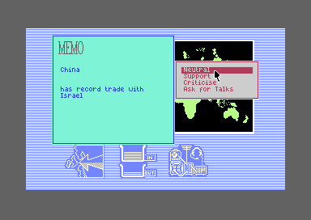<figcaption>Good news needs an answer as well: Support it or Criticise it.</figcaption></figure>
      <figure>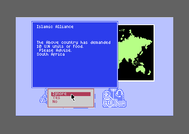<figcaption>A demand comes before the event it would prevent.</figcaption></figure>
      <figure>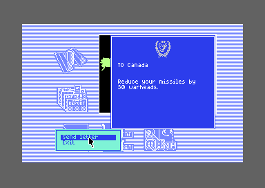<figcaption>One of the eight standard letters in the OUT tray.</figcaption></figure>
    </div>
  </div>
  <p>Each event runs a script in the game's own little language, which the engine at <code>script_commands</code> (<code>$4EB3</code>) reads a command at a time. Most events show a memo with four answers, and each answer is a script of its own. The answers raise and lower each country's confidence in the Commander, byte 9 of its record, from 0 to 255 and 128 at the start, and push the two countries' hostility up or settle it down to a calmer rung of their ladders. Many post mail that arrives this week or later, and mail left unread at the week's end runs a follow-up script instead, most of which cost trust or raise hostility. Answering Neutral to an assassination, a mobbed embassy, a car bomb or aid to an opposition is the most dangerous answer in the game: <a href="discoveries.html#neutral">half the time it ends the game</a>.</p>
  <p>Before most events a country may make a demand. A country at least as strong in missiles as its target, and short of natural resources or technology, demands ten units of what it lacks. Yes hands over one unit and the event is called off. No lets it happen. Ignore makes both countries as hostile as the next harsher event on the ladder, and runs that one instead.</p>
  <p>The letters work through trust. Most of them roll a random byte against the country's confidence in the Commander, and do what they ask only when the roll comes in, unless the U.N.N. Force stands on that country's soil.</p>
</section>

<section id="satellites">
  <p class="fig">08 · The satellites</p>
  <h2 class="t">A satellite sees a few pixels around it</h2>
  <p class="lede">Six laser satellites shoot down missiles and three Big Birds spy on countries, but only on a country whose rectangle comes within five pixels.</p>
  <div class="plate">
    <div class="am-bar"><span class="am-mono" id="am-sat-pos">Satellite at x 160, y 60</span></div>
    <div class="am-stack"><canvas id="am-map" class="am-cv" width="504" height="336" tabindex="0" aria-label="The map. Click or drag to move the satellite; the arrow keys move it a pixel at a time"></canvas></div>
    <p class="am-out">Covered: <span id="am-sat-out"></span></p>
    <p class="cap">Click or drag on the map to put the satellite in orbit; the arrow keys move it a pixel. The rectangles are the countries' boxes from their records at <code>$5DA4</code>, filled where the satellite covers them. The test is <code>in_cover</code> (<code>$C0AC</code>) written again in JavaScript, with the carries of its byte arithmetic, and checked against the game's own code in the kit's simulator: every x and every y from 0 to 255 for each country, and 20,000 random positions and reaches, all the same.</p>
  </div>
  <p>A satellite is placed from the satellite panel: the cursor carries it to the map and fire puts it in orbit, a dot of two by two pixels. Its record (<code>satellites</code>, <code>$5D5C</code>) keeps its position and a reach of 5 in each direction. The test <code>in_cover</code> (<code>$C0AC</code>) asks whether the satellite's x lies from 4 pixels left of a country's rectangle to 5 pixels right of its last column, and its y the same way. The rectangles are small, so a satellite covers one country, or two or three where they crowd together around Israel.</p>
  <p>Each frame a missile flies, every laser satellite in orbit has a 1 in 4 chance of trying for it, and catches it when the missile is under the satellite by the same test. A Big Bird does not catch anything. Every fourth tick, one after the radio, it may report a country beneath it, and the eye in the satellite panel lists what each kind covers. With no Big Bird over a country the eye says "No Foot prints!", even when the laser satellites cover half the map.</p>
</section>

<section id="radio">
  <p class="fig">09 · The radio</p>
  <h2 class="t">Eight filters unscramble a message</h2>
  <p class="lede">A message picked up while the radio scans arrives scrambled, and each of eight filters set right lets more of it through.</p>
  <div class="plate">
    <div class="am-field"><label for="am-rad-c">Sender</label><select id="am-rad-c"></select>
      <button type="button" class="am-btn" id="am-rad-key" aria-pressed="false">Show the key</button></div>
    <div class="am-radio" id="am-radio" aria-live="off"></div>
    <div class="am-filters" id="am-filters" role="group" aria-label="The eight filters"></div>
    <div class="am-meter" id="am-meter" aria-hidden="true"></div>
    <p class="am-out" id="am-rad-out"></p>
    <p class="cap">The filters start off, as they do in the game, and the message prints a character every second frame, over and over. The scrambling is <code>scramble_char</code> (<code>$7B51</code>) and the game's random numbers, <code>random</code> (<code>$7BAE</code>), written again in JavaScript and checked against the game's own code in the kit's simulator: 65,536 pairs of key and setting, and 100 seeds run for 1,000 numbers each. The message is intercept 0 from <code>intercept_texts</code> (<code>$560E</code>), from the sender about the next country on its list, after the line of R and Y the game puts first (<code>radio_header</code>, <code>$ABFE</code>).</p>
  </div>
  <figure style="margin:0 0 18px">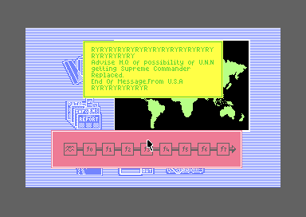<figcaption class="cap">A message from the U.S.A, picked up in VICE with the radio stopped, so it came through clear.</figcaption></figure>
  <p>Each country transmits in one of six bands, from 1,800 to 50,000 kHz (<code>country_bands</code>, <code>$7C31</code>), and every fourth tick the game may pick up a message from a country on the radio's band. While the radio scans, the message is shown under eight filters, f0 to f7, each a bit of a byte the player sets by clicking. Each country has its own key, one byte in <code>scramble_keys</code> (<code>$7C41</code>).</p>
  <p>Every message starts with RYRYRY, the line of R and Y that teleprinter operators sent to test a link, before the text itself.</p>
  <p>The scrambling counts the bits where the filters agree with the key. With all eight right the text comes through whole. Otherwise each character survives when a random byte falls below 32 times the number that agree, and is replaced by a random space, digit or sign when it does not. So each filter set right lets another eighth of the message through, and with none right the screen fills with noise. A message picked up while the radio is stopped uses the key <code>$00</code>, which the filters match as they start, so it arrives clear.</p>
</section>

<section id="war">
  <p class="fig">10 · War</p>
  <h2 class="t">Every missile that lands is one hit</h2>
  <p class="lede">A Total Missile Attack starts an exchange in which each side fires everything the other can still take.</p>
  <div class="plate">
    <div class="am-pics am-two">
      <figure>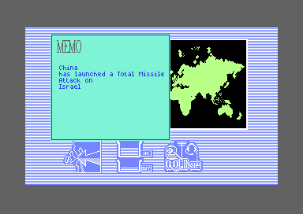<figcaption>The memo that starts a war.</figcaption></figure>
      <figure><figcaption>The report after the exchange.</figcaption></figure>
    </div>
    <div class="am-wrapx"><table class="am-tbl" id="am-countries"></table></div>
    <p class="cap">Each country's starting resources, technology, missiles and the hits that destroy it, from <code>countries_table</code> (<code>$A9AD</code>), six bytes a country. Resources and technology are shown in the game times ten, as percentages.</p>
  </div>
  <p>Each country holds three types of missile, MX1, MX2 and MX3. In a war, country A fires at B as many missiles as B can still take before it is destroyed, MX1 first, and B fires back as many as A can take, from its own stock (<code>script_exchange</code>, <code>$C70A</code>). The manual gives the three types different warheads and fallout, but in the code they differ only in the order they are fired: each one that lands is one hit and adds to the radiation by the same chance (<code>war_damage</code>, <code>$CC10</code>).</p>
  <p>Missiles fly across the map a pixel a frame from three launchers on each side. A hit raises the target's count of hits taken, and the hit that reaches its limit destroys it: its resources and technology fall to 0, and the clock never picks it for an event again. Every other hit raises the world's radiation by one, by a 1 in 4 chance. The launchers have a fault of their own, <a href="discoveries.html#phantom">which fires more missiles than the countries hold</a>.</p>
</section>

<section id="communique">
  <p class="fig">11 · The communique</p>
  <h2 class="t">Your rating is the world's trust added up</h2>
  <p class="lede">Every week ends with the U.N.N. Council's communique: a word for the Commander's performance and a word for the radiation.</p>
  <div class="plate">
    <div class="am-split">
      <div class="am-wrapx"><table class="am-tbl" id="am-ratings"></table></div>
      <div class="am-wrapx"><table class="am-tbl" id="am-rads"></table></div>
    </div>
    <p class="cap">The words from <code>rating_texts</code> (<code>$5A27</code>), <code>radiation_words</code> (<code>$590F</code>) and <code>text_background</code> (<code>$BB95</code>). In VICE, every country's confidence set to 255 gave "rated as Excellent", and radiation set to 255 ended the game at the week's end.</p>
  </div>
  <p>The rating is the sixteen countries' confidence in the Commander added up and divided by 512, which gives 0 to 7 (<code>week_end</code>, <code>$BAA1</code>). Every country starts at 128, a total of 2,048, so a new Commander is rated Acceptable, the fifth of the eight words. The radiation, 0 to 255, is divided by 32 for its word, and a world with no radiation at all reads "Background." instead.</p>
</section>

<section id="endings">
  <p class="fig">12 · The endings</p>
  <h2 class="t">Four ways the year ends</h2>
  <p class="lede">The game has four last messages (<code>game_over_texts</code>, <code>$B428</code>), and after each it starts a new year.</p>
  <div class="plate">
    <div class="am-pics">
      <figure>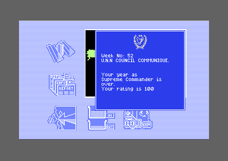<figcaption>After week 52, with no country destroyed: a rating of 100.</figcaption></figure>
      <figure>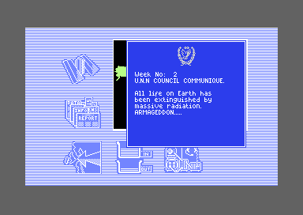<figcaption>Radiation at 255 when a week ends.</figcaption></figure>
      <figure>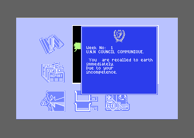<figcaption>Recalled for incompetence, after one Neutral too many.</figcaption></figure>
    </div>
  </div>
  <p>The year ends after 52 weeks with a rating of 16 less the countries destroyed, times 25, divided by 4 (<code>year_over</code>, <code>$B36F</code>): 100 with every country standing, 93 with one gone, and nothing at all for the trust the Commander built. The world ends at the end of a week whose radiation has reached 255. The Commander is recalled for lack of confidence by answering Agree when a country asks for a new Commander, and for incompetence by a Neutral answer to terrorism.</p>
</section>

<section id="controls">
  <p class="fig">13 · Controls</p>
  <h2 class="t">A keyboard or a joystick, chosen once</h2>
  <p class="lede">The options panel at the start offers F1 for the keyboard and F3 for a joystick in port 2.</p>
  <div class="plate">
    <div class="am-pics am-two">
      <figure>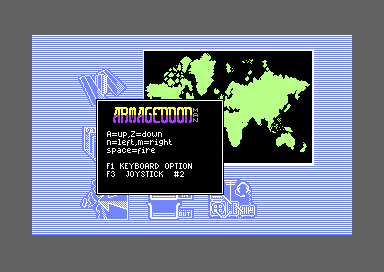<figcaption>The options panel, with the music already playing.</figcaption></figure>
      <figure>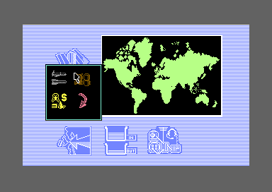<figcaption>Every choice is made by pointing and pressing fire.</figcaption></figure>
    </div>
  </div>
  <p>The keyboard moves the arrow with A up, Z down, N left and M right, and SPACE is fire (<code>read_keys</code>). The choice rewrites the call inside <code>read_controls</code>, so it holds until the machine is switched off. RESTORE does nothing: the game points the interrupt that the RESTORE key sets off at a lone <code>rti</code>, the instruction that returns from an interrupt (<code>nmi</code>, <code>$62CB</code>).</p>
</section>

</main>
<footer style="margin:16px 0 0;padding:22px var(--gx) 0;border-top:1px solid #e0ded8;font-family:'IBM Plex Mono',ui-monospace,Menlo,monospace;font-size:12px;color:#80838a"><a href="https://github.com/gamesexplained/gamesexplained" style="color:#1f5fa8;text-decoration:none">GitHub</a> · <a href="https://discord.gg/3V9GWyRDWV" style="color:#1f5fa8;text-decoration:none">Discord</a><br>© Games Explained contributors. Write-ups, facts and symbol maps are available under <a href="https://creativecommons.org/licenses/by-sa/4.0/" style="color:#1f5fa8;text-decoration:none">CC BY-SA 4.0</a>; code under <a href="https://opensource.org/licenses/MIT" style="color:#1f5fa8;text-decoration:none">MIT</a></footer>
<script src="../../lib/c64.js"></script>
<script src="../../lib/sid.js"></script>
<script src="../../lib/cpu6502.js"></script>
<script>
'use strict';
/* am-frame */
// The main screen as the game builds it, from the listing's bytes. The bitmap at $E000 is the
// picture as it loads. hardware_init ($62CD) fills all 1,000 colour cells at $DC00 with the byte
// its `ldx` at $62DD loads ($1E, white on blue), and cold_start paints the map's cells with
// fill_cells ($717E), whose five inline bytes at $7C5C are a column, a row, a width, a height and
// a colour, counted from screen column 4 and row 1, where the game's 32 by 24 cell area starts
// (screen_rows, $4FD3). sprites_init ($637C) points the eight sprites at shapes $68 to $6F
// ($DFF8, in bank 3: $DA00 up), and cursor_shape1 ($5F14) builds the arrow with make_sprite
// ($521B): the 16 one-byte rows of shape 0 of sprite_sources ($52A4) into sprite 0, and of shape 1
// into sprite 1, three bytes a row. The video chip's registers and the bank are those of a frame
// of the main screen recorded in VICE: sprite 0 white over sprite 1 black, with the cursor at x
// 216, y 62.
const AM_VIC = [216, 62, 216, 62, 0, 0, 0, 0, 0, 0, 0, 0, 0, 0, 0, 0, 0, 59, 0, 0, 0, 3, 200, 0, 125, 112, 241, 0, 0, 0, 83, 3,
  251, 240, 241, 242, 243, 244, 240, 241, 240, 243, 244, 245, 246, 247, 252];
const AM_CIA2 = [196, 63];
function amScreen(ram) {
  const m = ram.slice();
  m.fill(ram[0x62DE], 0xDC00, 0xDC00 + 1000);
  const col = ram[0x7C5C], row = ram[0x7C5D], w = ram[0x7C5E], h = ram[0x7C5F], c = ram[0x7C60];
  for (let y = 0; y < h; y++) {
    const at = 0xDC00 + (row + 1 + y) * 40 + col + 4;
    m.fill(c, at, at + w);
  }
  for (let n = 0; n < 8; n++) m[0xDFF8 + n] = 0x68 + n;
  for (let s = 0; s < 2; s++) {
    const src = ram[0x52A4 + 2 * s] | ram[0x52A5 + 2 * s] << 8, at = 0xDA00 + 64 * s;
    m.fill(0, at, at + 64);
    for (let r = 0; r < 16; r++) m[at + 3 * r] = ram[src + r];
  }
  return { lines: 312, cycles: 63, vic: AM_VIC.slice(), cia2: AM_CIA2.slice(), writes: [], mem: m, colourMem: new Uint8Array(1024) };
}
// end of am-frame

/* am-sound */
// createDriver for C64Sid: runs the game's own sound code, $4000-$4DEB from the listing, on the
// kit's 6502 (C64Cpu, which sid.js passes in). play() is one call of sound_irq ($413A), as the
// raster interrupt makes it once a frame: it skips every tenth call (sound_skip, $412D), and
// otherwise runs the music (mus_play, $4159) and then the effects or the alarm (sfx_play, $4CC2).
// init(t) starts from the driver's bytes as loaded and makes one call with A set: for a tune,
// mus_start_tune ($4000) with its number, as options_panel ($7D0B) does for tune 0, the only one
// the game starts; for an effect, sfx_start ($4A8E) with its number; for the alarm, alarm_start
// ($4A48) with a period. Nothing in the game calls the last two. stop() is sound_off ($4DB1), as
// the driver's own stop command calls it. The driver reads none of the chip's registers.
const AM_TUNES = [
  { name: 'Tune 0 · the game', at: 0x4000, a: 0, on: 0x412E },
  { name: 'Tune 1 · never played', at: 0x4000, a: 1, on: 0x412E },
  { name: 'Tune 2 · never played', at: 0x4000, a: 2, on: 0x412E },
  { name: 'Tune 3 · never played', at: 0x4000, a: 3, on: 0x412E },
];
const AM_EFFECTS = [
  ...Array.from({ length: 17 }, (_, n) => ({ name: 'Effect ' + n, at: 0x4A8E, a: n, on: 0x4132 })),
  { name: 'Alarm · period 0', at: 0x4A48, a: 0, on: 0x4133 },
  { name: 'Alarm · period 3', at: 0x4A48, a: 3, on: 0x4133 },
  { name: 'Alarm · period 7', at: 0x4A48, a: 7, on: 0x4133 },
];
function createDriver(D, C64Cpu) {
  const base = new Uint8Array(0x10000);
  base.set(D.bytes, 0x4000);
  const sid = new Uint8Array(25);
  let m, cpu, s, writes = [];
  const io = {                                                  // the chips at $D000-$DFFF
    read() { return 0; },
    write(ad, val) { if (ad >= 0xD400 && ad < 0xD419) { sid[ad - 0xD400] = val; writes.push(ad - 0xD400, val); } },
  };
  const call = (at, a) => cpu.call(at, { a, x: 0, y: 0, n: 0, v: 0, d: 0, z: 0, c: 0 }, { maxSteps: 100000 });
  return {
    sid,
    get writes() { return writes; },
    init(t) {
      s = D.sounds[t];
      m = base.slice(); cpu = new C64Cpu.CPU(m, { port: 0x35, io });
      sid.fill(0); writes = [];
      call(s.at, s.a);
    },
    stop() { writes = []; call(0x4DB1, 0); },
    play() { writes = []; call(0x413A, 0); },
    playing() { return m[s.on] !== 0; },
    voice(x) { return s.at === 0x4000 ? { at: m[0x40C4 + 35 * x] | m[0x40C5 + 35 * x] << 8, note: m[0x40D4 + 35 * x] } : {}; },
  };
}
// end of am-sound

/* am-events */
// country_events ($AE77), once a tick: picks a country A at random, again until it finds one not
// destroyed (byte 11 of its record, the hits taken, is $FF once destroyed; $AD33), then looks at
// the 16 countries B in turn from a random one, skipping a destroyed one and A itself. For each B
// it goes through A's 32 event levels (event_levels, $958C + 32 × A) for the first that is not 0
// and lies within one of A's hostility to B (relations, $5C5C + 16 × A + B): the level less the
// hostility as a byte, made positive (eor #$FF, adc #1) when its top bit is set, below 2. The first
// B with such an event gets it (run_event, $B161); when none has one, A grows more hostile to
// every country by one (relations_row_up, $7E23). A level of $FF less a hostility of 0 is $FF, -1
// as a signed byte, so it matches. amEvent is the test for one pair; amCountryEvents the whole
// search, with rand() for the game's random number (random, $7BAE), of which it keeps the low four
// bits; it returns b and e as -1 when no event was found.
function amEvent(levels, a, h) {
  for (let e = 0; e < 32; e++) {
    const lv = levels[32 * a + e];
    if (!lv) continue;
    let d = lv - h & 0xFF;
    if (d & 0x80) d = (d ^ 0xFF) + 1 & 0xFF;
    if (d < 2) return e;
  }
  return -1;
}
function amCountryEvents(rel, levels, hits, rand) {
  let a;
  do a = rand() & 15; while (hits[a] === 0xFF);
  let b = rand() & 15;
  for (let n = 0; n < 16; n++, b = b + 1 & 15) {
    if (hits[b] === 0xFF || b === a) continue;
    const e = amEvent(levels, a, rel[16 * a + b]);
    if (e >= 0) return { a, b, e };
  }
  return { a, b: -1, e: -1 };
}
// expand_text ($AB96): copies a text up to its "$", and in place of "@" and the two bytes of an
// address after it, the text at that address, up to its own "$". A text names country A with "@"
// $5B34 and country B with "@" $5B3C; the game writes into each the address of the country's name,
// from the table cover_names ($C04C), before it prints. amExpand gives the codes of the text at
// "at" with A and B filled in.
function amExpand(ram, at, a, b) {
  const m = ram.slice(0, 0x10000), name = (n) => ram[0xC04C + 2 * n] | ram[0xC04D + 2 * n] << 8;
  m[0x5B35] = name(a) & 0xFF; m[0x5B36] = name(a) >> 8;
  m[0x5B3D] = name(b) & 0xFF; m[0x5B3E] = name(b) >> 8;
  const out = [];
  const copy = (p, depth) => {
    for (let k = 0; k < 4096 && depth < 16; k++, p++) {
      const ch = m[p & 0xFFFF];
      if (ch === 0x24) return;
      if (ch === 0x40) { copy(m[p + 1 & 0xFFFF] | m[p + 2 & 0xFFFF] << 8, depth + 1); p += 2; } else out.push(ch);
    }
  };
  copy(at, 0);
  return out;
}
// end of am-events

/* am-cover */
// in_cover ($C0AC): is the thing whose record is c (a country's box: x, y, width and height on the
// map, bytes 0 to 3) under the satellite whose record is s (bytes 0 and 1 its x and y, 2 and 3 its
// reach, 5 and 5)? For each axis, as the code works it out on bytes with its carries: the thing's x
// less the satellite's x, then less its reach and the borrow, must come out with bit 7 set; then
// that plus the reach (after clc), plus 5, plus the width, each with the carry of the sum before,
// must come out with bit 7 clear.
function amInCover(c, s) {
  for (let i = 0; i < 2; i++) {
    let t = c[i] - s[i];
    t = (t & 0xFF) - s[2 + i] - (t < 0 ? 1 : 0);
    let A = t & 0xFF;
    if (!(A & 0x80)) return false;
    t = A + s[2 + i]; A = t & 0xFF;
    t = A + 5 + (t >> 8); A = t & 0xFF;
    t = A + c[2 + i] + (t >> 8); A = t & 0xFF;
    if (A & 0x80) return false;
  }
  return true;
}
// end of am-cover

/* am-radio */
// random ($7BAE): three bytes of state, st[0] to st[2] ($7BAB-$7BAD). st[0] turned right three
// times, each bit that falls off the bottom put back at the top, is added to st[1] and then st[2]
// (the carry of the first sum goes into the second); the sum is turned left twice, bit 7 back in at
// bit 0. The state moves down a byte and the result becomes st[2].
function amRandom(st) {
  let r = st[0];
  for (let i = 0; i < 3; i++) r = r >> 1 | (r & 1) << 7;
  let t = r + st[1];
  t = (t & 0xFF) + st[2] + (t >> 8);
  r = t & 0xFF;
  for (let i = 0; i < 2; i++) r = r << 1 & 0xFF | r >> 7;
  st[0] = st[1]; st[1] = st[2]; st[2] = r;
  return r;
}
// scramble_char ($7B51): the filter setting against the sender's key (scramble_keys, $7C41), bit
// by bit. With all eight the same the character is printed as it is. Otherwise a random number
// below 32 times the number that match lets it through, and when it does not, a second random
// number's low five bits plus $20 goes in its place: a space, a digit or a sign.
function amScramble(ch, key, set, st) {
  let n = 0;
  for (let b = ~(key ^ set) & 0xFF; b; b >>= 1) n += b & 1;
  if (n === 8) return ch;
  if (amRandom(st) < n * 32) return ch;
  return (amRandom(st) & 0x1F) + 0x20;
}
// end of am-radio

// ---- the page
const $ = (id) => document.getElementById(id);
const hex = (v, n = 4) => '$' + v.toString(16).toUpperCase().padStart(n, '0');
const NAMES = ['Canada', 'U.S.A', 'Central American Alliance', 'European Unite', 'Libya', 'Argentina', 'Black African Republic',
  'South Africa', 'Israel', 'Islamic Alliance', 'Pakistan', 'India', 'Australia', 'China', 'Japan', 'Eastern Block'];
const EVENTS = ['Total Missile Attack', 'Limited Missile Attack', 'Total Conventional Attack', 'Limited Conventional Attack',
  'Shoots down military aircraft', 'Urgent talks', 'State of emergency', 'Serious warning', 'Military spending up',
  'Chemical supplies built up', 'Civilian vessel impounded', 'Press attack', 'Embassy closed', 'Diplomats expelled',
  'Ambassador reprimanded', 'Diplomat assassinated', 'Embassy mobbed', 'Car bomb', 'Aid to fanatical opposition',
  'Leaders look to cooperate', 'Friendly press', 'Record trade', 'Cultural exchange', 'State visit', 'New embassy',
  'Non-aggression pact', 'Trade pact', 'High-level summit', 'New jet developed together', 'Military co-operation',
  'Military bases allowed', 'Mutual Defence Pact'];
const text = (codes) => codes.map((c) => c === 13 ? '\n' : String.fromCharCode(c)).join('');
const word = (ram, at) => ram[at] | ram[at + 1] << 8;
function missing(el, what) {
  const p = document.createElement('p');
  p.className = 'cap';
  p.textContent = 'This needs ' + what + ', which loads only in the built site.';
  el.appendChild(p);
}
function options(sel, names, v) {
  sel.innerHTML = names.map((n, i) => '<option value="' + i + '">' + n + '</option>').join('');
  sel.value = String(v);
}

// 02 the frame, with its overlays
const GX = 64, GY = 43;                       // the game's pixel 0, 0 in the picture: screen column 4, row 1
function frameWidget(ram) {
  const F = amScreen(ram);
  C64.drawFrame($('am-frame'), F, 1);
  const ov = $('am-frame-ov'), g = ov.getContext('2d'), S = 2;
  const on = { spec: true, cells: false, boxes: false };
  function draw() {
    g.clearRect(0, 0, ov.width, ov.height);
    if (on.cells) {
      g.strokeStyle = 'rgba(255,240,120,.55)'; g.lineWidth = 1;
      for (let x = 0; x <= 40; x++) { g.beginPath(); g.moveTo((32 + 8 * x) * S + .5, 35 * S); g.lineTo((32 + 8 * x) * S + .5, 235 * S); g.stroke(); }
      for (let y = 0; y <= 25; y++) { g.beginPath(); g.moveTo(32 * S, (35 + 8 * y) * S + .5); g.lineTo(352 * S, (35 + 8 * y) * S + .5); g.stroke(); }
      g.strokeStyle = '#ff6b5a'; g.lineWidth = 3;
      const col = ram[0x7C5C] + 4, row = ram[0x7C5D] + 1;
      g.strokeRect((32 + 8 * col) * S, (35 + 8 * row) * S, 8 * ram[0x7C5E] * S, 8 * ram[0x7C5F] * S);
    }
    if (on.spec) {
      g.strokeStyle = '#ffd23f'; g.lineWidth = 3; g.setLineDash([10, 6]);
      g.strokeRect(GX * S - 1.5, GY * S - 1.5, 256 * S + 3, 192 * S + 3);
      g.setLineDash([]);
      g.fillStyle = '#ffd23f'; g.font = '600 18px ' + getComputedStyle(document.body).getPropertyValue('--fm');
      g.fillText('256 × 192', GX * S + 6, GY * S - 8);
    }
    if (on.boxes) {
      g.lineWidth = 2;
      for (let n = 0; n < 16; n++) {
        const r = 0x5DA4 + 12 * n;
        g.strokeStyle = n % 2 ? '#ff6b5a' : '#ffd23f';
        g.strokeRect((GX + ram[r]) * S, (GY + ram[r + 1]) * S, ram[r + 2] * S, ram[r + 3] * S);
      }
    }
  }
  $('am-screen-bar').addEventListener('click', (e) => {
    const b = e.target.closest('button[data-ov]');
    if (!b) return;
    on[b.dataset.ov] = !on[b.dataset.ov];
    b.setAttribute('aria-pressed', String(on[b.dataset.ov]));
    draw();
  });
  draw();
  return F;
}

// 04 the clock's eight ticks
function ticksWidget() {
  const rows = [['Country events', () => true], ['Radio intercept', (t) => t % 4 === 0], ['Big Bird report', (t) => t % 4 === 1], ['End of the week', (t) => t % 8 === 0]];
  let h = '<span class="am-l am-h" role="columnheader">Tick</span>';
  for (let t = 0; t < 8; t++) h += '<span class="am-h" role="columnheader">' + t + '</span>';
  for (const [name, f] of rows) {
    h += '<span class="am-l" role="rowheader">' + name + '</span>';
    for (let t = 0; t < 8; t++) h += '<span class="' + (f(t) ? 'am-y' : 'am-n0') + '" role="cell">' + (f(t) ? '●' : '') + '</span>';
  }
  $('am-ticks').innerHTML = h;
}

// 05 the events ladder
function eventsWidget(ram) {
  const levels = ram.slice(0x958C, 0x958C + 512);
  const selA = $('am-ev-a'), selB = $('am-ev-b'), range = $('am-ev-h');
  options(selA, NAMES, 13); options(selB, NAMES, 8);
  function show() {
    const a = +selA.value, b = +selB.value, h = +range.value;
    $('am-ev-hv').textContent = String(h);
    const e = a === b ? -1 : amEvent(levels, a, h);
    let lad = '', marked = false;
    for (let k = 0; k < 32; k++) {
      const lv = levels[32 * a + k];
      if (!marked && lv && lv < h - 1) {
        lad += '<div class="am-row am-mark"><span class="am-k">▶</span><span>' + NAMES[a] + "'s hostility to " + NAMES[b] + '</span><span class="am-v">' + h + '</span></div>';
        marked = true;
      }
      const cls = !lv ? ' am-off' : k === e ? ' am-hit' : '';
      lad += '<div class="am-row' + cls + '"><span class="am-k">' + k + '</span><span>' + EVENTS[k] + '</span><span class="am-v">' + (lv || '–') + '</span></div>';
    }
    if (!marked) lad += '<div class="am-row am-mark"><span class="am-k">▶</span><span>' + NAMES[a] + "'s hostility to " + NAMES[b] + '</span><span class="am-v">' + h + '</span></div>';
    $('am-ladder').innerHTML = lad;
    const memo = $('am-memo');
    if (a === b) {
      memo.className = 'am-memo am-quiet'; memo.textContent = 'A country never acts on itself.';
      $('am-ev-out').textContent = '';
    } else if (e < 0) {
      memo.className = 'am-memo am-quiet'; memo.textContent = 'No event: no level of ' + NAMES[a] + "'s is within one of " + h + '.';
      $('am-ev-out').textContent = 'If no other country gives a match either, ' + NAMES[a] + ' grows more hostile to every country by one.';
    } else {
      memo.className = 'am-memo';
      memo.innerHTML = '<b>MEMO</b>';
      memo.appendChild(document.createTextNode(text(amExpand(ram, word(ram, 0x55B8 + 2 * e), a, b)).replace(/^\n+/, '').replace(/\n{2,}/g, '\n')));
      $('am-ev-out').innerHTML = 'Event ' + e + ', level ' + levels[32 * a + e] + (e === 0 && h === 0
        ? ': the level 255 less a hostility of 0 is <code>$FF</code>, which the game reads as -1. <a href="discoveries.html#best-friends">The friendliest countries go to war.</a>'
        : ', within one of ' + h + '.');
    }
  }
  for (const el of [selA, selB, range]) el.addEventListener('input', show);
  show();
}

// 07 the satellite's cover
function coverWidget(ram, F) {
  const cv = $('am-map'), g = cv.getContext('2d'), S = 3, X0 = 80, Y0 = 8, W = 168, H = 112;
  const full = document.createElement('canvas'), bare = Object.assign({}, F, { vic: F.vic.slice() });
  bare.vic[0x15] = 0;                           // the map without the arrow
  C64.drawFrame(full, bare, 1);
  const boxes = Array.from({ length: 16 }, (_, n) => Array.from(ram.slice(0x5DA4 + 12 * n, 0x5DA4 + 12 * n + 4)));
  const reach = [ram[0x5D5C + 2], ram[0x5D5C + 3]];
  const sat = [160, 60];
  g.imageSmoothingEnabled = false;
  function draw() {
    g.drawImage(full, GX + X0, GY + Y0, W, H, 0, 0, W * S, H * S);
    const s = [sat[0], sat[1], reach[0], reach[1]], hit = [];
    boxes.forEach((c, n) => {
      const covered = amInCover(c, s);
      if (covered) hit.push(n);
      g.fillStyle = covered ? 'rgba(255,107,90,.45)' : 'rgba(0,0,0,0)';
      g.fillRect((c[0] - X0) * S, (c[1] - Y0) * S, c[2] * S, c[3] * S);
      g.strokeStyle = covered ? '#ff6b5a' : 'rgba(255,210,63,.75)'; g.lineWidth = covered ? 3 : 1.5;
      g.strokeRect((c[0] - X0) * S, (c[1] - Y0) * S, c[2] * S, c[3] * S);
    });
    g.fillStyle = '#ffffff';
    g.fillRect((sat[0] - X0) * S, (sat[1] - Y0) * S, 2 * S, 2 * S);
    $('am-sat-pos').textContent = 'Satellite at x ' + sat[0] + ', y ' + sat[1];
    $('am-sat-out').textContent = hit.length ? hit.map((n) => NAMES[n]).join(', ') : 'nothing';
  }
  function at(ev) {
    const r = cv.getBoundingClientRect();
    sat[0] = Math.max(X0, Math.min(X0 + W - 2, X0 + Math.floor((ev.clientX - r.left) / r.width * W)));
    sat[1] = Math.max(Y0, Math.min(Y0 + H - 2, Y0 + Math.floor((ev.clientY - r.top) / r.height * H)));
    draw();
  }
  let down = false;
  cv.addEventListener('pointerdown', (ev) => { down = true; cv.setPointerCapture(ev.pointerId); at(ev); });
  cv.addEventListener('pointermove', (ev) => { if (down) at(ev); });
  cv.addEventListener('pointerup', () => { down = false; });
  cv.addEventListener('keydown', (ev) => {
    const d = { ArrowLeft: [-1, 0], ArrowRight: [1, 0], ArrowUp: [0, -1], ArrowDown: [0, 1] }[ev.key];
    if (!d) return;
    ev.preventDefault();
    sat[0] = Math.max(X0, Math.min(X0 + W - 2, sat[0] + d[0]));
    sat[1] = Math.max(Y0, Math.min(Y0 + H - 2, sat[1] + d[1]));
    draw();
  });
  draw();
}

// 08 the radio's filters
function radioWidget(ram) {
  const sel = $('am-rad-c'), box = $('am-radio'), keyBtn = $('am-rad-key');
  options(sel, NAMES, 13);
  const st = [0xAD, 0xCE, 2 * 100];             // random_init's seed, with the raster on line 100
  let set = 0, key = 0, msg = [], pos = 0, shown = '', frame = 0;
  const btns = [];
  for (let f = 0; f < 8; f++) {
    const b = document.createElement('button');
    b.type = 'button'; b.textContent = 'f' + f; b.setAttribute('aria-pressed', 'false');
    b.addEventListener('click', () => { set ^= 1 << f; status(); });
    $('am-filters').appendChild(b); btns.push(b);
  }
  $('am-meter').innerHTML = '<i></i>'.repeat(8);
  function status() {
    btns.forEach((b, f) => b.setAttribute('aria-pressed', String(!!(set >> f & 1))));
    let n = 0;
    for (let b = ~(key ^ set) & 0xFF; b; b >>= 1) n += b & 1;
    [...$('am-meter').children].forEach((i, k) => i.classList.toggle('am-ok', k < n));
    $('am-rad-out').textContent = n + ' of 8 filters agree with the key: ' + (n === 8 ? 'every character comes through.' : 'each character comes through ' + (n * 32) + ' times in 256.') +
      (keyBtn.getAttribute('aria-pressed') === 'true' ? '  Key ' + hex(key, 2) + ', the filters ' + [0, 1, 2, 3, 4, 5, 6, 7].filter((f) => key >> f & 1).map((f) => 'f' + f).join(', ') + (key ? ' on.' : ' all off.') : '');
  }
  function pick() {
    const a = +sel.value;
    key = ram[0x7C41 + a];
    msg = Array.from(ram.slice(0xABFE, 0xAC25)).concat(amExpand(ram, word(ram, 0x560E), a, (a + 1) % 16));   // radio_header, then the message
    pos = 0; shown = ''; set = 0;
    status();
  }
  sel.addEventListener('input', pick);
  keyBtn.addEventListener('click', () => { keyBtn.setAttribute('aria-pressed', String(keyBtn.getAttribute('aria-pressed') !== 'true')); status(); });
  pick();
  let last = 0, acc = 0;
  function tick(t) {
    acc += Math.min(200, t - (last || t)); last = t;
    while (acc >= 20) {                         // a PAL frame is 20 ms; a character every second frame
      acc -= 20;
      if (++frame & 1) continue;
      const c = amScramble(msg[pos], key, set, st);
      shown += c === 13 ? '\n' : String.fromCharCode(c);
      if (++pos >= msg.length) pos = 0;
      const lines = shown.split('\n');
      if (lines.length > 7) shown = lines.slice(-7).join('\n');
    }
    if (box.textContent !== shown) box.textContent = shown;
    requestAnimationFrame(tick);
  }
  requestAnimationFrame(tick);
}

// 09 and 10: the countries' start, the communique's words
function tablesWidget(ram) {
  let h = '<tr><th>Country</th><th class="am-n">Resources</th><th class="am-n">Tech</th><th class="am-n">MX1</th><th class="am-n">MX2</th><th class="am-n">MX3</th><th class="am-n">Hits to destroy</th></tr>';
  for (let n = 0; n < 16; n++) {
    const r = ram.slice(0xA9AD + 6 * n, 0xA9AD + 6 * n + 6);
    h += '<tr><td>' + NAMES[n] + '</td><td class="am-n">' + r[0] * 10 + '%</td><td class="am-n">' + r[1] * 10 + '%</td><td class="am-n">' + r[2] + '</td><td class="am-n">' + r[3] + '</td><td class="am-n">' + r[4] + '</td><td class="am-n">' + r[5] + '</td></tr>';
  }
  $('am-countries').innerHTML = h;
  const words = (table, n) => Array.from({ length: n }, (_, k) => text(amExpand(ram, word(ram, table + 2 * k), 0, 0)).replace(/^@?[^A-Za-z]*/, '').trim());
  const ratings = Array.from({ length: 8 }, (_, k) => { const p = word(ram, 0x5A27 + 2 * k); return text(Array.from(ram.slice(p + 3, ram.indexOf(0x40, p + 3)))); });
  $('am-ratings').innerHTML = '<tr><th class="am-n">Confidence, all 16</th><th>Rated as</th></tr>' +
    ratings.map((w, k) => '<tr><td class="am-n">' + (512 * k) + '–' + Math.min(512 * k + 511, 16 * 255) + '</td><td>' + w + '</td></tr>').join('');
  const rads = words(0x590F, 8);
  $('am-rads').innerHTML = '<tr><th class="am-n">Radiation</th><th>World radiation report</th></tr><tr><td class="am-n">0</td><td>' +
    text(amExpand(ram, 0xBB95, 0, 0)) + '</td></tr>' + rads.map((w, k) => '<tr><td class="am-n">' + (k ? 32 * k : 1) + '–' + (32 * k + 31) + '</td><td>' + w + '</td></tr>').join('');
}

// 03 and 12: the players
function soundWidgets(ram) {
  const bytes = ram.slice(0x4000, 0x4DEC);
  const rows = [{ k: 'Pattern', f: (v) => v.at ? hex(v.at) : '-' }, { k: 'Note', f: (v) => v.note === undefined ? '-' : C64Sid.noteName(v.note + 12) }];
  C64Sid.mount($('am-music'), { driver: createDriver, data: { bytes, sounds: AM_TUNES }, tunes: AM_TUNES.map((t) => t.name), rows });
  C64Sid.mount($('am-sfx'), { driver: createDriver, data: { bytes, sounds: AM_EFFECTS }, tunes: AM_EFFECTS.map((t) => t.name), bounce: false });
}

ticksWidget();
if (typeof C64 === 'undefined') {
  for (const id of ['am-frame-cap', 'am-ladder', 'am-map', 'am-radio', 'am-countries', 'am-ratings', 'am-music', 'am-sfx']) missing($(id).parentNode, "the site's C64 library");
} else {
  C64.load('listing.json').then((L) => {
    const F = frameWidget(L.ram);
    eventsWidget(L.ram);
    coverWidget(L.ram, F);
    radioWidget(L.ram);
    tablesWidget(L.ram);
    if (typeof C64Sid === 'undefined' || typeof C64Cpu === 'undefined') { missing($('am-music'), "the site's sound chip and 6502"); missing($('am-sfx'), "the site's sound chip and 6502"); }
    else soundWidgets(L.ram);
  });
}
</script>
